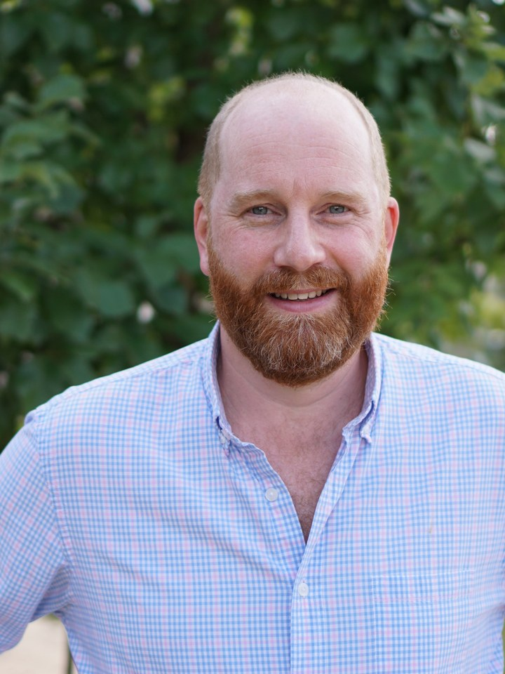

Practical skills for thinking clearly under pressure.
When your teams aren't at their best, your business isn't either. Let's change that.
Skills training for fire and EMS, hospital teams, trading floors, and law firms. In-person workshops and a six-week program, delivered by a licensed clinician with ten years in trauma and PTSD. Not a generalist consultant.
The curriculum draws on the thinking skills of Cognitive Behavioral Therapy (CBT) and Rational Emotive Behavior Therapy (REBT). These are the same techniques I use clinically, adapted for group training rather than watered down for it.
Before I trained as a therapist, I spent fifteen years inside high-pressure corporate environments. I know the meetings, the deadlines, and the particular flavour of stress that builds in front-office work. I've been in the rooms these sessions are built for, and I've watched smart people make bad decisions under pressure.
This is not positive thinking, and it is not a wellness perk. It is practical skill-building. Your people learn to recognise the thinking that hijacks judgement under pressure, challenge it with evidence, and choose a more useful response while the pressure is still on.
A note on tone. I'm British, which means dry humour is standard equipment. This isn't a slide-deck monologue or a scripted module with breakout rooms and trust falls. It is direct, occasionally funny, and designed to teach your people something they can use on Monday. Nobody falls asleep.
My strong preference is to work in person, in the room with your team. Skills this important are taught face to face. For teams that are genuinely distributed and cannot gather in one place, I will consider remote delivery. It is the exception, not the default, and it is always a conversation first.

What teams leave with.
A sharper lens for what's actually happening.
People learn to notice the automatic thoughts that drive reactive behaviour, such as catastrophising, all-or-nothing thinking, and personalising, and to see them as events in the mind rather than orders to act on.
Tools that work when the pressure is on.
Cognitive restructuring and REBT disputation are taught as on-shift, on-floor, on-call techniques. Teams practise the skills on their own work, with scenarios drawn from their own setting.
A shared vocabulary the team keeps.
The team walks out with a shared language for what happens under pressure, and a short set of practices they can run without me. The goal is competence they own, not a dependency on an outside expert.
Who this is for.
I work with teams whose exposure to pressure is structural, not occasional. Cumulative stress, fast decisions with real stakes, and conflict that compounds the longer a day goes on.
Fire, EMS, and law enforcement. Cumulative exposure, critical incident reactions, and the quiet ways operational stress leaks into the rest of life.
Hospitals and frontline clinical teams. Compassion fatigue, moral injury, and the weight of back-to-back decisions where wrong has real consequences.
Trading floors and front-office finance. Recency bias, loss aversion, and performance decay when stress starts to drive the decision rather than the analysis.
Law firms and legal operations. Adversarial conflict, billable pressure, and the thinking patterns that erode both client judgement and personal health.
What it isn't.
It isn't therapy. Nobody becomes a patient of mine through this work. If an individual needs clinical care, I will say so, and point them somewhere appropriate.
It isn't positive thinking. CBT and REBT are about challenging distorted thinking with evidence, not replacing bad thoughts with good ones.
It isn't a wellness perk. This is skills training for high-stakes work. If what your team needs is mindfulness or a yoga afternoon, I can recommend excellent people.
Three formats. Transparent pricing.
Pricing is flat for the group, not per-seat. Travel outside the Pittsburgh metro is arranged at cost and agreed in writing before booking.
Half-day workshop
$3,500
3 hours. Up to 25 participants. One skill set taught to fluency, applied to scenarios from your own setting. Useful as a first engagement or as a standalone team off-site.
Full-day workshop
$6,500
6 hours. Up to 25 participants. A broader toolkit with more practice time and harder scenarios. Leaves the team with skills they can keep running without me.
Thinking Clearly Under Pressure
$9,500 per cohort
6 weekly sessions of 90 minutes. Group of up to 12. The flagship program, built for teams that want real behaviour change, with practice and feedback between sessions. Ends with a short written brief to the engaging leader on patterns observed, skills built, and what to reinforce afterwards. No individual disclosures, ever.
First-cohort pricing. This rate is held for the first two cohorts so we can build a referenceable case. Subsequent cohorts will be priced to reflect the nine hours of custom clinical work, the between-session practice support, and the written close-out brief.
How it's delivered.
Workshops and programs are delivered in person by default, at your site or an off-site venue of your choosing. Teams in the Pittsburgh metro pay no travel charge. For teams elsewhere in the United States, travel and lodging are arranged at cost and agreed in writing before booking. Printed materials are provided on the day, and a PDF copy is the team's to keep.
Remote delivery is available by exception for teams that are genuinely distributed and cannot gather in one place. If that is you, get in touch and we will talk it through honestly before anything is booked.
Grounded in published clinical work.
The CBT content draws on the work of Aaron and Judith Beck. The REBT content draws on the work of Albert Ellis. The integration of the two follows the framework set out in Cognitive Behavioural Counselling in Action by Trower, Casey, and Dryden (Sage), a published integration of the two traditions rather than an ad-hoc blend.
I hold an LCSW in Pennsylvania (CW024575), Texas (103592), and California (95685), with ten years specialising in trauma and PTSD. The same clinical rigour applies to the corporate work.
A short, honest next step.
Start with a free 15-minute scoping call with the person who holds the budget, or the person who will be in the room. By the end of it we will both know whether this is the right fit, and which format makes sense. No proposal pack, no sales machinery.